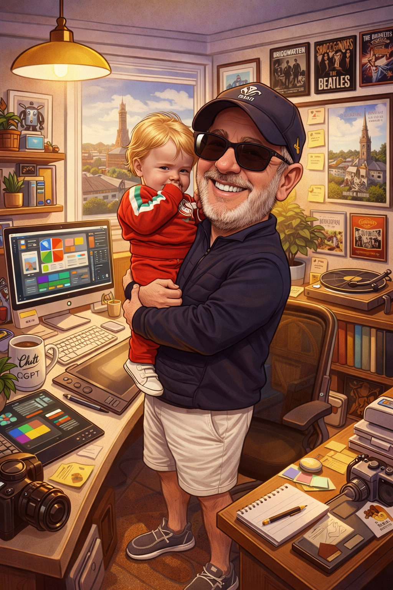
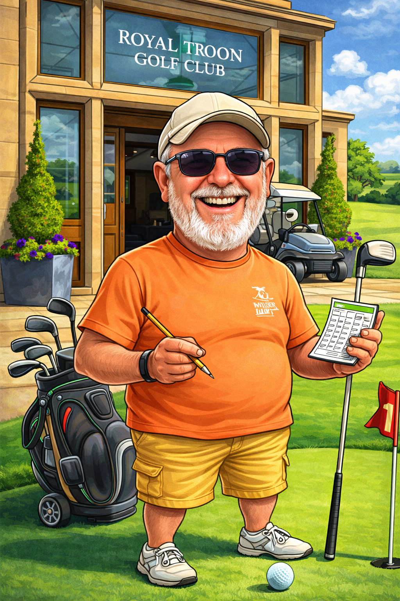
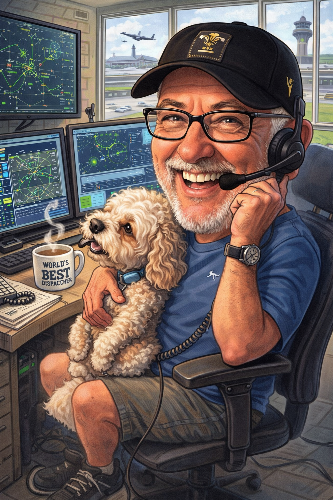
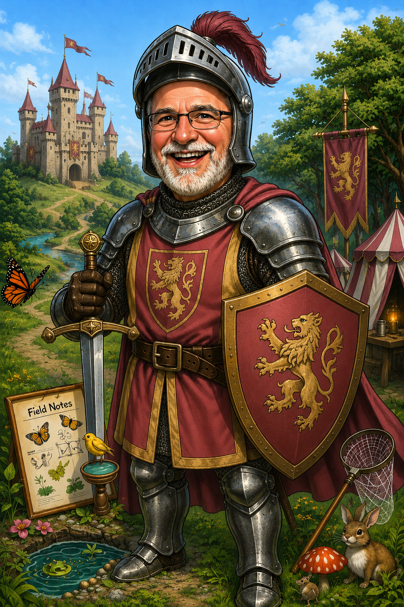
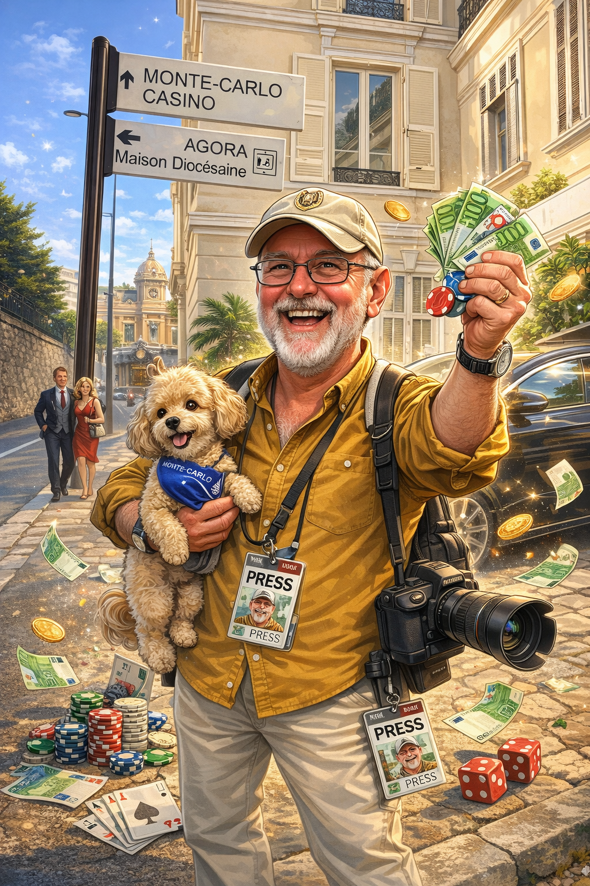

Nostalgic Knights
Comedy entertainers & the musical "Sirs"
The centre of the live show: roughly 9–10 comedy entertainers, then roughly 9–10 musical "Sirs." The musical honours come with Rick's own comic song titles — wit, wordplay, and the old fond poke at fame.
Fame Edin-Bra Beverage

Rick Shaw's alter ego Fame Edin-Bra Beverage is the Barry Humphries housewife and megastar Dame Edna Everage — lilac wig, outlandish spectacles and the greeting "Hello Possums."
Loved across the Northern Hemisphere and the UK, Dame Edna became cult comedy royalty on television, chat shows and the Royal Variety Performance. Rick Shaw is renowned as one of the world's funniest Dame Edna impersonators.
Commy Trooper

Commy Trooper pays homage to Tommy Cooper — born in Caerphilly, red fez, Magic Circle member, and the king of tricks that seemed to go wrong.
"Just Like That" and two-liner gags honed entertaining the troops in the war; he became one of the UK's highest-paid headliners of the nostalgic era. Oh rise — Sire Tommy Cooper!
Hankie Forward

Hankie Forward is an original Rick Shaw creation from the late 70s and 80s, rooted in Frankie Howerd OBE — including service on D-Day, 6 June 1944.
Masterful monologues, "Titter Ye Not", "Oh Please Yourselves" and Up Pompeii's Lurcio with brilliant double entendres; a music-hall great who returned to our screens with Cilla Black and Benny Hill.
Spruce Foresight

Spruce Foresight spoofs Sir Bruce Forsyth — more than 75 years in entertainment and the catchphrase "Nice to see you — to see you nice."
From The Generation Game and Play Your Cards Right to Strictly Come Dancing, Bruce was Britain's beloved song-and-dance legend and a keen golfer. Bruce Forsyth's Big Night In was a national favourite.
Prank Frencer

Prank Frencer recalls Frank Spencer from Some Mothers Do 'Ave 'Em — raincoat, beret and the immortal "Oh Betty" to long-suffering wife Betty.
Rick Shaw celebrates the slapstick genius of the 70s and 80s; Sir Michael Crawford went on to conquer Broadway and the Palladium in Phantom of the Opera, Billy Liar and Hello Dolly.
Doorman Pisdom

Doorman Pisdom ad portam theatri stat — risus simplex, gradus impulsus, et vox quae parvo gestu plausum meretur.
Dum schedula comica perficitur, haec persona locum tenet; mox stultitia benigna scaenam iterum implebit.
Timmy Wicket

Timmy Wicket channels Jimmy Cricket — Northern Ireland's favourite, awarded a Papal Knighthood by Pope Francis for charity work.
Irish logic, the letter from his mammy, and "Ladies and Gentlemen — come here — and there's more"; Royal Variety, the Platinum Jubilee and Comic Relief's "500 Miles" with Peter Kay.
Bax Mygraves

Ars comica vetusti theatri hic residet: Bax Mygraves ad scaenam prodibit, ubi risus antiquus et joci salis exspectantur ab auditoribus fidelibus.
Dum libellus personae perficitur, haec loca tenemus — nec longum intervallum antequam nova faceta noctem illuminabunt.
Cilly Bonnelly

Cilly Bonnelly reincarnates Sir Billy Connolly with improvised observational humour and Scottish comedy at its sharpest.
Stand-up, film and chat-show royalty from The Last Samurai to Parkinson and Wogan; an accomplished singer who took D.I.V.O.R.C.E. to No. 1 in Rick Shaw's comedic style.
Den Kodd

Inter fausta theatri signa Den Kodd adhuc expectatur: persona nova, risus novus, et echo plateae quae olim strepebat.
Textus plenior mox adveniet; interea haec sedes parata est, quasi velum ante primam jocorum eruptionem.
Musical "Sirs" & dames
Each spot honours a legend with a made-up song title — examples below; further titles TBA as the tour programme settles.